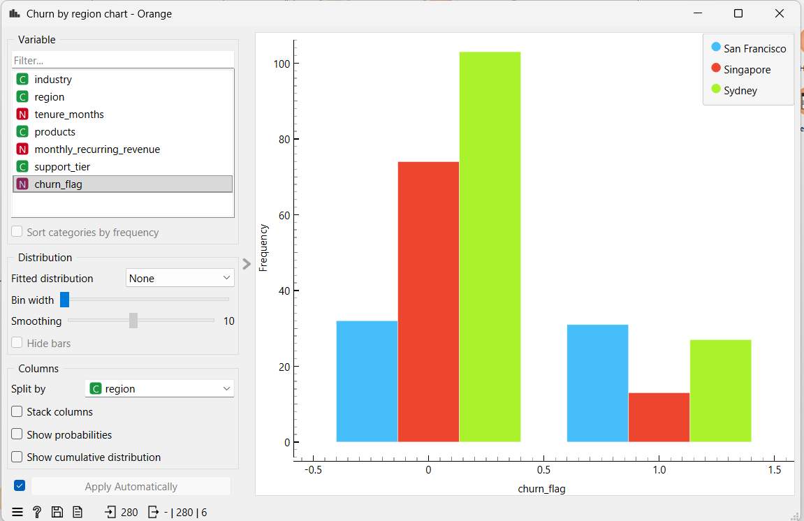
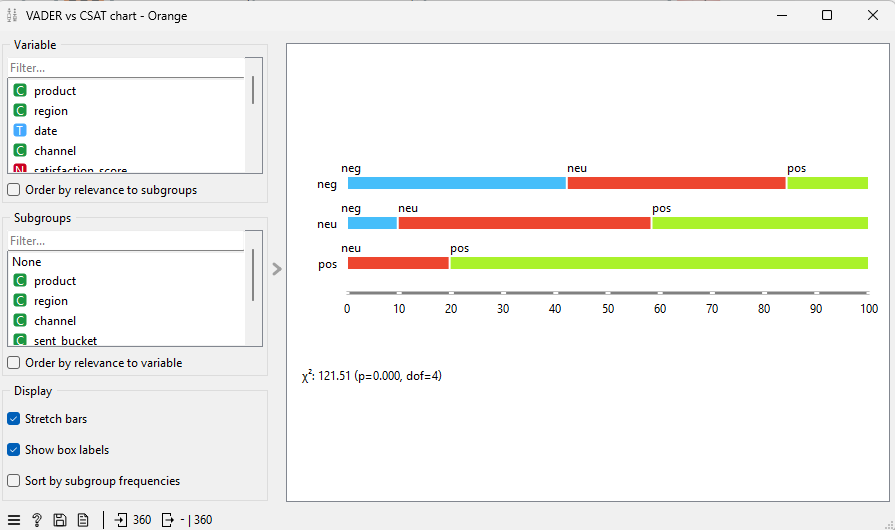

Text analytics · Orange Data Mining
Customer feedback at scale
A software company has hundreds of support tickets and reviews and wants to know where to spend next quarter's support effort. Acting as the consultant, I analysed the feedback in Orange, separated a product problem from a regional one, and tested whether a sentiment tool could be trusted to find unhappy customers. It could not, and the report says so.
- Problem
- Customer satisfaction is low for one product and one region. Are these the same problem, and which should the support team fix first?
- What I did
- Sole author of the consultant report: stakeholder interview, Orange workflow, analysis, evaluation and recommendation. AI-Driven Knowledge Systems unit (ISYS6014), Curtin University, 2026.
- Tools
- Orange Data Mining with the Text add-on · VADER and Liu Hu sentiment · hierarchical clustering · ANOVA
- Result
- Two separate problems. One product is rated lowest in every region, and one region loses 49% of its customers. The sentiment tool found only 42% of unhappy customers, so I recommended staff keep reading negative tickets.
from 280 customers in 3 regions
San Francisco against Singapore
by the sentiment tool, against a 70% target

What I found
-
There are two problems, not one. CloudSync is the lowest-rated product in every region, in both tickets and reviews. San Francisco is the lowest-rated region for every product. They need different responses, so I measured them separately.
-
The regional problem is the bigger one for the business. San Francisco loses 49.2% of its customers, against 14.9% in Singapore and 20.8% in Sydney. That is a gap of 34 percentage points. The gap between the worst and best product is only 8 points.
-
The product problem is reliability, not confusion. The support team wondered whether customers simply did not understand CloudSync. I read all 25 negative CloudSync tickets and none was about how to use it. They describe failed syncs, duplicated records, dropped integrations and API errors.
-
Clustering found no themes, and I reported that. The 360 tickets contain only 48 different messages, so every clustering setting put almost all tickets in one group. I read the 38 negative tickets directly and grouped them by hand.
-
The sentiment tool misses most unhappy customers. Checked against customers' own scores, VADER found 16 of the 38 negative tickets (42.1%). A second method, Liu Hu, found 22 (57.9%). Neither reached the 70% the client needs.
-
One stakeholder claim did not hold up. I was told San Francisco customers are simply more willing to post feedback. They leave 0.92 reviews per customer, about the same as Singapore's 0.95, so the data does not support that.
Product and region
Average ticket satisfaction, on a scale of 1 to 5. CloudSync is lowest in every column and San Francisco is lowest in every row. The difference between regions is unlikely to be chance (ANOVA F = 26.46, p < 0.001), though I treated that as supporting evidence because the scale is only 1 to 5.
| Product | San Francisco | Singapore | Sydney | Overall |
|---|---|---|---|---|
| CloudSync | 2.37 | 3.35 | 3.04 | 2.91 |
| Account | 2.94 | 3.59 | 3.71 | 3.48 |
| Analytics Pro | 3.15 | 3.70 | 3.82 | 3.65 |
| DataVault | 3.52 | 4.05 | 3.97 | 3.90 |
Who is leaving
Satisfaction and churn do not tell the same story. In San Francisco almost as many customers left as stayed.
| Region | Customers | Churn rate |
|---|---|---|
| San Francisco | 63 | 49.2% |
| Singapore | 87 | 14.9% |
| Sydney | 130 | 20.8% |
| Overall | 280 | 25.4% |

Can the sentiment tool be trusted?
The client wanted to use sentiment scores to find unhappy customers automatically. I set the test before running it: the tool must find at least 70% of the tickets that customers themselves scored 1 or 2. Overall accuracy would hide the answer, because only 38 of 360 tickets are negative.
| Measure, on 360 tickets | VADER | Liu Hu |
|---|---|---|
| Unhappy customers found (target 70%) | 16 of 38 (42.1%) | 22 of 38 (57.9%) |
| Negative labels that were correct | 16 of 30 (53.3%) | 22 of 61 (36.1%) |
| Overall agreement with customers | 63.6% | 74.2% |
The tools fail in a predictable way. They read words, not meaning, so a polite or factual complaint looks neutral and a threat to leave can look positive.
"Honestly considering AWS for this, reliability has to improve."
The customer scored this ticket as negative. VADER scored it +0.71, strongly positive, because of the words "honestly" and "improve".

The tool was weakest where it matters most. In San Francisco it found 9 of 23 unhappy customers (39.1%), and it found none of the 7 unhappy Account customers.
What I recommended
- Fix CloudSync reliability first. The complaints are specific and the same in every region, so the fix is clear.
- Find out why San Francisco customers leave. The data shows the size of the problem but not its cause. It needs resolution-time data and the customer success team.
- Do not use the sentiment tool to sort customers. Staff should keep reading negative tickets, and any ticket that mentions a competitor should always be read by a person.
- Set a bar for any future model. It should find at least 70% of unhappy customers in every region before it is used.
Limitations
- The data is small and repetitive. 48 different ticket messages and 40 different review messages are not enough for text clustering.
- Some customers leave without a word. 8 of the 71 churned customers (11%) wrote no ticket and no review, so feedback data cannot see them.
- Product churn is approximate. Some customers raised more than one ticket, so product figures are only used to compare products with each other.
Key takeaways
- Treat what stakeholders say as a hypothesis. The interview pointed at one product. The data showed the region mattered more for churn.
- Measure the thing the decision depends on. A tool that is right about happy customers and wrong about unhappy ones is no use for finding unhappy ones.
- Report the method that failed. Saying the clustering found nothing, and why, is more useful than forcing five themes out of it.
- Keep a person in the loop where a mistake costs a customer.
About the data
Where the data comes from: CloudCore Networks is the case-study client for the AI-Driven Knowledge Systems unit (ISYS6014) at Curtin University. The tickets, reviews and customer records are the unit's client data extracts, and company names are not shown.